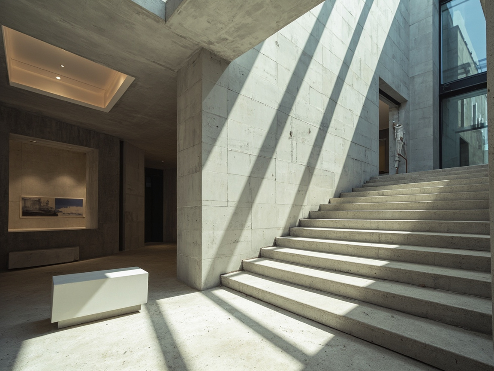
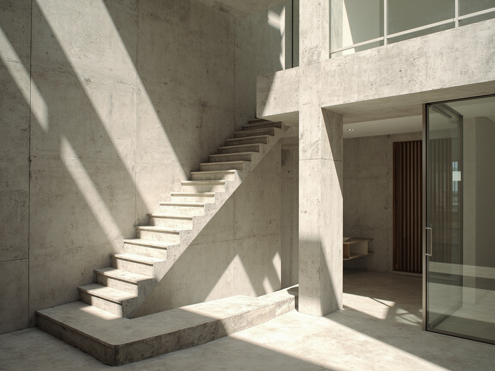
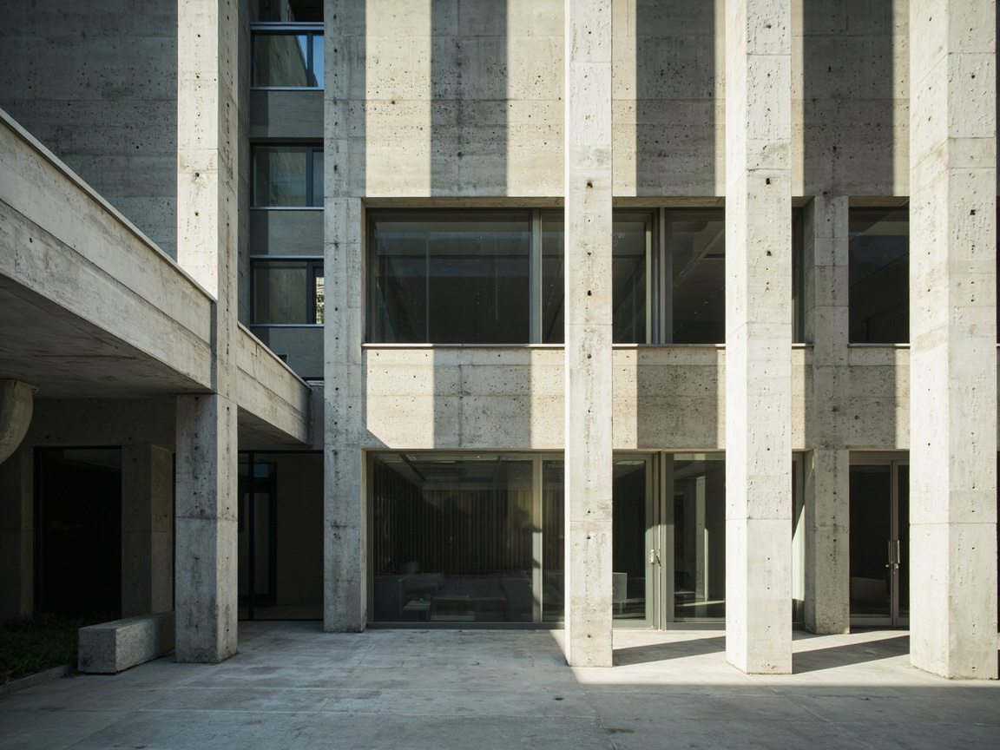
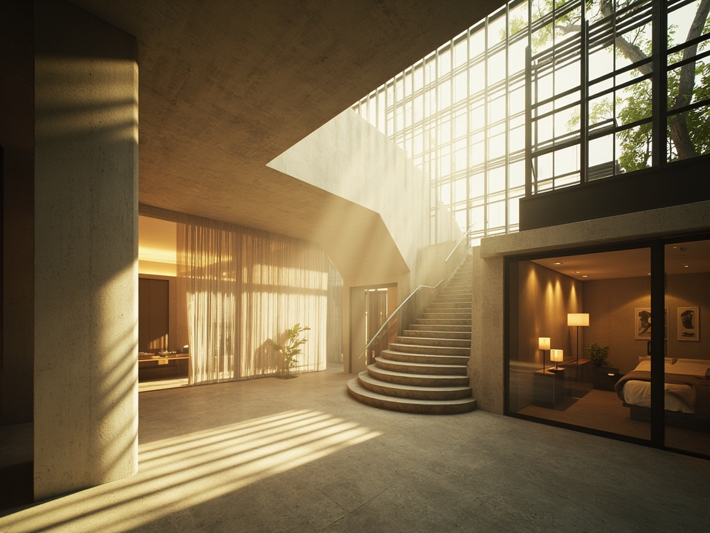

Reduktion
Wir nehmen weg, bis nur noch das Notwendige steht. Material, Licht, Proportion — alles andere ist Lärm.
Wir entwerfen Wohn- und Hotelbauten, in denen Beton, Tageslicht und Stille eine architektonische Haltung bilden. 24 realisierte Bauten in Europa und Asien — jedes eine Antwort auf Ort, Klima und Material.

Ein Bau ist nicht zuerst Form, sondern Licht, das auf eine Oberfläche trifft. Wir arbeiten mit dem, was bleibt: Stahl, Stein, Holz, Glas — und dem, was vorbeizieht: der Tag.
Jedes Projekt beginnt mit einem einzigen Tag vor Ort. Wir messen das Licht, gehen den Grundstücksschnitt, hören den Ort. Erst danach folgt der erste Strich. Material wird bei uns nicht dekoriert, sondern gesucht — nach Körnung, nach Temperatur, nach dem Geräusch, das es macht, wenn man darüber geht.
Unsere Bauten verzichten auf Geste. Sie wollen nicht gefallen, sondern dastehen. Was sie bieten, ist Stille: eine Haltung des Raums, in der der Mensch wieder vorkommt — nicht als Konsument, sondern als Bewohner.
Wir nehmen weg, bis nur noch das Notwendige steht. Material, Licht, Proportion — alles andere ist Lärm.
Sichtbeton, gehämmerter Stein, geöltes Eichenholz. Materialien dürfen altern und ihre Geschichte zeigen.
Jeder Raum erhält mindestens zwei Lichtquellen aus unterschiedlichen Himmelsrichtungen — tiefes, wohnliches Licht.
Eine Lese-Reihe aus dem Portfolio: drei Bauten, die unsere Haltung auf unterschiedliche Weise verdichten. Scrollen, um sie zu öffnen.
Eifel, Deutschland · Privatwohnhaus
Ein langgestreckter Sichtbetonkörper, der sich in einen Südhang legt. Die Fensterlaibungen sind 480 mm tief — sie fangen das Morgenlicht und schneiden es in den Raum.

Kyoto, Japan · 14 Zimmer
Ein Hotel zwischen zwei Tempelgärten. Schwarzer Putz außen, geöltes Hinoki-Holz innen. Jedes Zimmer hat eine eigene Lichtquelle zur Straße und eine zur Gartenseite — zwei Himmel, ein Raum.

Sylt, Deutschland · Ferienhaus
Ein Ferienhaus in den Dünen, das vom Wind erzählt. Die Fassade aus gegossenem Sandbeton nimmt die Farbe der Umgebung an. Eine einzige verglaste Giebelseite richtet sich nach Westen zur See.
Eine Auswahl weiterer realisierter Bauten — vom Stadthaus in München bis zur Kapelle in Brandenburg. Insgesamt 24 Projekte, davon 8 in Arbeit.

16 weitere Bauten im vollständigen Portfolio — auf Anfrage.
Portfolio anfordernAuszeichnungen bedeuten uns wenig gegen den Bau selbst — und doch zeigen sie, dass unsere Haltung verstanden wird. Eine Auswahl.